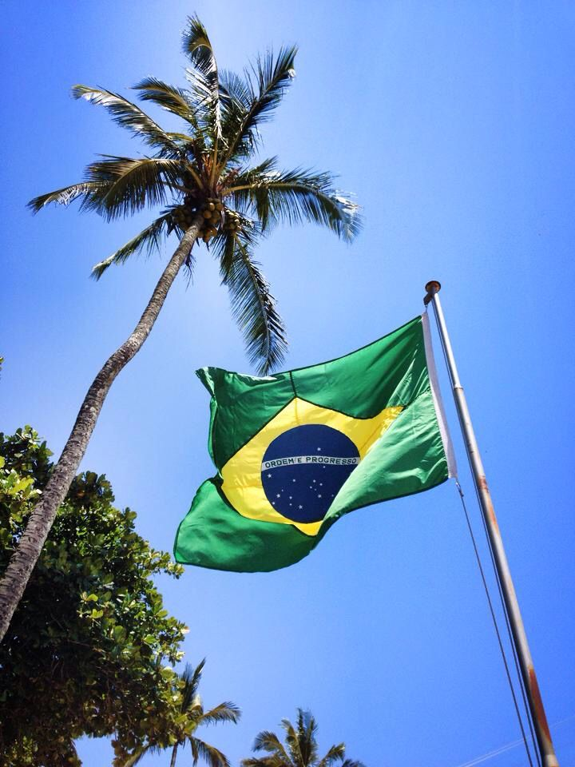
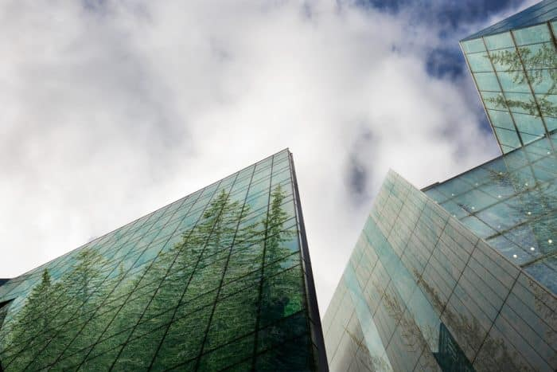

A sustentabilidade vem sendo alcançada como um desenvolvimento que satisfaz as necessidades do presente.
Para alguns exemplos no Brasil, as pessoas buscam um consumo maior de produtos naturais, reciclagem, uso de meio de transporte e geradores de energia menos poluentes, reutilização de materiais.
Com a sustentabilidade cada vez mais presentes no Brasil e no mundo, foram criadas as chamadas cidades sustentáveis. Muito bem planejadas e administradas, elas adotam práticas eficientes voltadas para a melhoria da qualidade de vida da população desenvolvimento econômico e preservação do meio ambiente.
No Brasil, a cidade de João Pessoa é reconhecida pela proteção de áreas ambientais. Já Curitiba é famosa, dentre outras coisas, pelo planejamento estrategico envolvendo o lixo - 70% é reciclado - e a preocupação com a modalidade urbana - a cidade tem 200 km de ciclovias e 385 linhas de ônibus, o que permitiu que o tráfego de automóveis diminuísse em 30%, mesmo com o crescimento da população.
Atualmente o Brasil está prestes a se tornar um dos líderes mundiais na produção de aerogeradores, equipamentos destinados a produzir energia elétrica a partir dos ventos. O país também investe na produção de energia solar, com investimento de mais de US$26 bilhões. Há também projetos relacionados a Biomassa, que utiliza o lixo orgânico, resíduos agrícolas e óleo vegetal para a produção de energia.

A Bandeira do Brasil
Principais Desafios no Brasil
Desinteresse: Mesmo as empresas e que as pessoas tenham alguma noção sobre a necessidade da preservação ambiental, existem aqueles que não se importam ou não fazem nada para mudar o meio ambiente, pois não se sentem impactados pelas mudanças.
Desinformação: O Maior desafio sem duvidas é não entender a urgência de se começar a repensar nos hábitos de consumo e formas de produção, afinal, o conhecimento sobre o tema infelizmente não faz parte da realidade de muitas pessoas.
Desigualdade Social: É o momento em que a pessoa compreende a necessidade de realizar mudanças, porém não tem recursos básicos para isso, como alimentação, moradia, água, energia e condições para pagar transporte público.

Desafios no Brasil
Soluções para a sustentabilidade no Brasil
Além de consolidarem as bases para a conservação ambiental, as ações buscam preservar áreas verdes, arborização urbana e recuperação de áreas degradadas. Tudo com uso de árvores nativas.
No dia a dia, algumas ações e atitudes de como tornar a sustentabilidade uma prática da sociedade: o uso da bicicleta, ampliação de ciclovias, planos estratégicos para o desenvolvimento sustentável, troca de lixo reciclável por materiais escolares, entre outras ações cotidianas básicas para driblar os desafios da sustentabilidade no Brasil